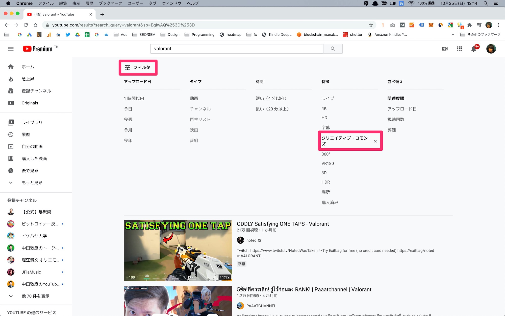

【フリーランス向け】動画編集で仕事獲得する方法【超具体例で有益】
こんにちは、ゆーだいです。
YouTuberとして、活動しています。
チャンネル登録は、48万人を超えました。
さて、先日に下記の質問をいただきました。
いただいた質問
僕は動画編集者じゃないですが、ビジネスは得意です。
どういった戦略が良いか、詳しく解説していきます。
YouTube版も公開しています
動画で学びたい方は、YouTubeからどうぞ。聞き流しで理解できます。
フリーランス向け：動画編集で仕事獲得する方法
{kind=link}
よし、本日のYouTubeは「動画編集で、仕事受注する方法」を解説です😌
初心者ならランサーズで仕事を探してもいいですが、ぶっちゃけ単価が安いので、消耗しやすいです。それよりも、僕なら「専門チャンネル作成＆中堅YouTuberに成果報酬で営業」をすると思います。近いうちに公開します— マナブ@バンコク (@manabubannai) October 25, 2020
こちらで理解できた方は、ここで閉じて、行動しましょう。
しかし、ぶっちゃけ「わりと難しい内容」を書いていますので、順を追って解説します。
※先に書いておくと、SNS発信は特に不要です。
大前提：ランサーズは、どうなの
フリーランスで稼ぎたい人の、たぶん９割以上は「ランサーズで仕事を探せばいいのかな」と考えるはず。
これは正解なのですが、１つ大きな問題があります。
ランサーズにある仕事の特徴
上記のとおりで、これが問題点です。
ランサーズ自体は素晴らしい仕組みですが、要するに消耗しやすいです。
発注者の視点だと分かりますが、発注者は「とりあえず編集できる人なら、スキルが十分なら誰でもいいか」と考えますね。
単価が崩壊しますね。
これが、わりと頻繁に起こっています。
なぜ、単価崩壊するのか
ここも重要なので、もう少し解説します。
まず、世の中のフリーランスには、いくつかのパターンがあります。
- その①：フリーランスとして、独立して食べたい人
- その②：副業フリーランスとして、月３万の小遣いが欲しい人
- その③：主婦の副業で、ちょっと月１万など、小銭だけ稼ぎたい人
例えば上記。
そして、単価崩壊する理由は「その②、その③」の人がいるからですね。
そこまで稼がなくて良くて、とはいえ「ある程度の時間を確保できる」という状況なので、こういった人は「安い提案」をします。
以上が、価格崩壊の流れです。
ここに怒っても意味ないので、改善案です。
結論：あなたの強みを作ろう
強みがないと、大多数に埋もれます。
これはプログラミングでも同じですが、例えば下記です。
- Aさん：動画編集できる人。学習期間は１年。毎月３万ほど稼ぐ。
- Bさん：ゲーム動画の編集が得意。面白くカットできる。学習期間は１年。
上記の場合において、生き残るのは「Bさん」です。
専門特化しており、独自の強みがあるからですね。
その強みは「面白くカットできる」という部分ですが、これが大きな強みになります。
他の例も出します。
- Aさん：動画編集できる人。学習期間は１年。毎月３万ほど稼ぐ。
- Bさん：Vlogの編集が得意。綺麗な世界観の演出ができる。音響も得意。
上記でも、もう分かりますよね。
Bさんが強いです。
こういった感じで「あなたの強み」を作る必要があります。
まずは基礎スキルを学ぶべきですが、学んだあとは、強みの構築ですね。
強みを作る方法
ここはシンプルに「好きな分野の追求」でいいと思います。
僕の場合だと、間違なく「ゲーム」ですね。
もともとゲームが好きで、いまでも毎日プレイしています。
毎日、２〜３時間のゲームです。
コロナで外出できなかった時期は、毎日10時間ほどプレイしていました。
よし、ゲーム10時間プレイしました😌
ガッツリ練習できたのですが、、まだまだ自分が弱すぎて絶望。とりあえず明日にはゲーミングチェアが届きそうなので、腰の痛みからは解放されそうです。ゲームの反省を考えつつ、本日は寝ます— マナブ@バンコク (@manabubannai) April 9, 2020
なので、動画編集で稼ぐなら、間違いなくゲーム分野を軸に、自分の強みを作っていきます。
例えばですが、下記のイメージです。
- 海外で人気チャンネルのリサーチ
- 最近伸びているチャンネルのリサーチ
- 定番で伸びる動画をエクセルなどにまとめ
こういった知識を増やしていき、発注者に提案します。
あとリサーチするといっても、普段から動画をみていたら、リサーチとかってあまり必要ないと思います。
ここが強みですよね。
これができると、あなたの強みになります。
動画編集で仕事を取るための、超具体例な戦略
{kind=link}
- 手順①：専門チャンネルを作る
- 手順②：伸びる動画を、アップする
- 手順③：中堅YouTuberに、直営業する
上記の３ステップです。
順番に見ていきましょう。
手順①：専門チャンネルを作る
まずは「あなたの好きな分野にて、専門チャンネル作成」をしましょう。
例えばですが、下記のとおり。
- ゲームが好き → ゲームチャンネル
- 料理が好き → 料理のチャンネル
- 旅が好き → 旅のチャンネル
チャンネルを作ったら、10〜20本くらいは動画をアップします。
その際に、めちゃくちゃ入念な作成は不要です。
それよりも、マーケティングを意識して作ることが大切です。
次の手順にて、解説します。
手順②：伸びる動画を、アップする
先ほどもにも少し書きましたが、伸びそうな動画をアップします。
僕はゲームが好きなので、仮に「ゲームの専門チャンネルを作る」と決めたら、次のような動画をアップします。
おもしろい場面のまとめ動画
エイム方法の解説動画
ただし、１つ注意点があります。
他の方の動画を「勝手にDLし、編集してアップ」だと、著作権で問題があります。
なので、動画を探すときは「クリエイティブ・コモンズ」で探すといいですね。

こういった感じで検索すると、著作権フリーの動画を探せます。
ここでヒットした動画なら、再編集しても問題ないはずです。
{kind=link}
この方法なら、法的にも問題ないはず。
不安な方は、YouTube側にお問い合わせしてみるのもありですね。
手順③：中堅YouTuberに、直営業する
以上の手順で、あなたのポートフォリオが完成しました。
そしたら、中堅YouTuberに、営業するだけ。
例えばですが、SHAKAchさん
SHAKAさんは、ApexやPUBGで有名なプレイヤーです。
中堅というより、上位プレイヤーかと思いますが、僕がファンなので、取り上げました。
{kind=link}
こういった方に、ポートフォリオとセットで営業します。
その際に「面白くカットできます」といった、自分独自の強みがあると、なお良いですね。
番外編：成果報酬型もあり
先ほどに紹介したSHAKAさんですが、こういったチャンネルがあります。
これとかも、かなり良いと思うんですよね。
{kind=link}
というのも、ゲーム実況する人って、基本的には動画の垂れ流しです。
しかし視聴者からすると、あとから見返すのがメンドイ。
そこで「切り抜き」のチャンネルが価値を生みますよね。
そして僕なら「成果報酬での営業」をします。
要するに「編集費用は０円でいいので、再生されて広告費が発生したら、そこからマージンをください」という提案です。
これだと相手のリスクもゼロなので、わりと受注しやすいはず。
無料でも編集マンになる価値は、大きいはず。
SHAKAさんの実績を持っていたら、他のゲーム実況者にも営業しやすいですよね。
というわけで、今回は以上です。
参考になったはず。頑張りましょう(｀･ω･´)ゞ
P.S：普段の僕は「Twitter」を軸に発信しています。また最近は「Webマーケ教材」の作成に注力しており、ネットで稼ぐスキルを学べます。ブログの更新通知はtwitterからお知らせします。